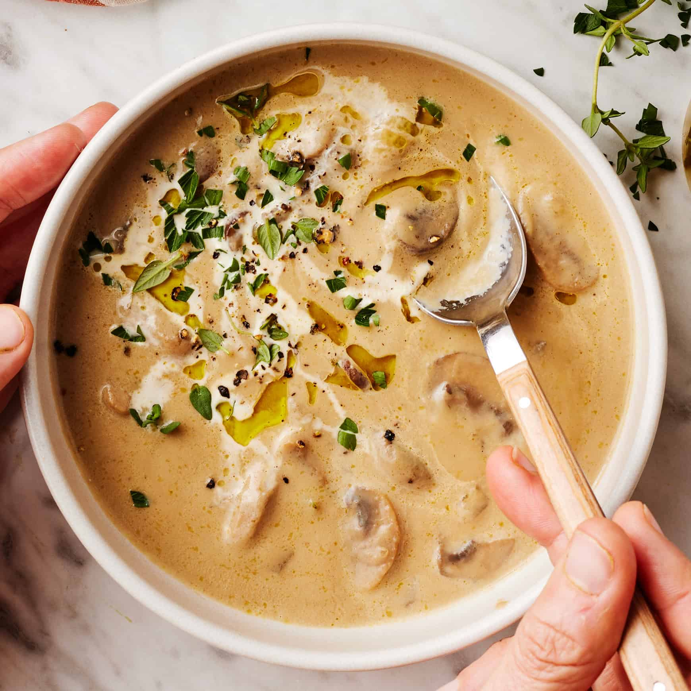

Mushroom Soup Recipe
Home

Description
This mushroom soup recipe is creamy, comforting, and bursting with savory mushroom flavor. Make it with or without cream—it's delicious either way!
Ingredients
- 2 tablespoons extra-virgin olive oil, plus more for serving
- 2 tablespoons unsalted butter
- 1 medium yellow onion, chopped
- ½ teaspoon sea salt
- Freshly ground black pepper
- 1 pound white button mushrooms, stemmed and sliced
- 8 ounces cremini mushrooms, stemmed and sliced
- 2 garlic cloves, grated
- ¼ cup dry white wine
- 3 cups vegetable broth
- 1 tablespoon tamari
- 1 tablespoon fresh thyme leaves, plus more for garnish
- Chopped fresh parsley, for garnish
Steps
- Heat the olive oil and butter in a large pot over medium heat.
Add the onion, salt, and several grinds of pepper and cook for 2 minutes, or until softened slightly.
- Add half the mushrooms and cook, stirring occasionally, for 5 minutes, or until softened.
Add the remaining mushrooms and cook for another 5 minutes.
- Stir in the garlic, followed by the wine, broth, tamari, and thyme. Cover and simmer for 15 minutes.
- Allow the soup to cool slightly, then transfer two-thirds to a blender and blend until smooth.
- Stir the blended soup back into the pot with the chunky soup. Season to taste.
- Ladle into bowls and serve topped with a drizzle of olive oil and/or cream, fresh parsley, and thyme.